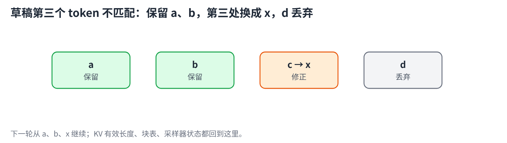
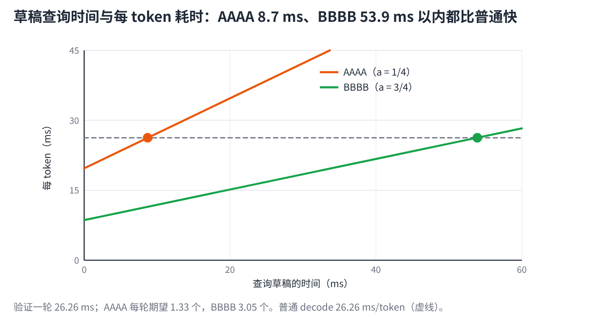
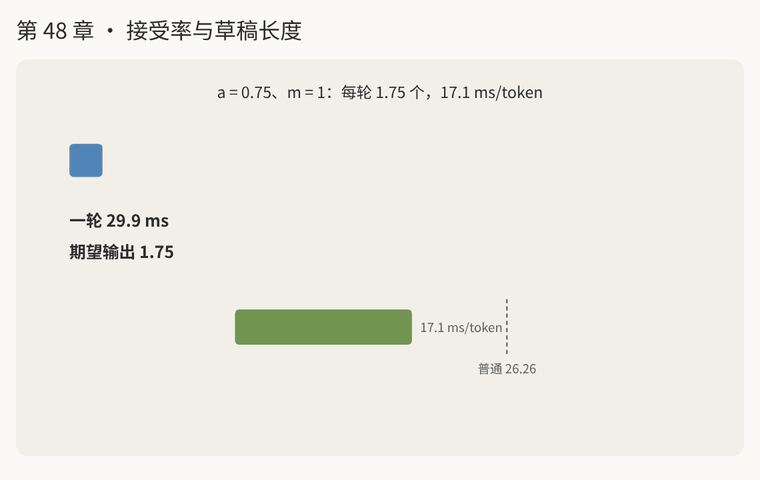

第 48 章 · 推测解码：一次验证，确定好几个 token
本地运行
git clone https://github.com/wikieden/ai-infra-from-constraints
cd ai-infra-from-constraints/code/notebooks
pip install jupyterlab torch numpy
jupyter lab ch48_speculative.ipynb也可以下载后直接用 VS Code 打开 .ipynb 运行。需要 GPU 的章节在 Colab 里选「代码执行程序 → 更改运行时类型 → GPU」。
本章回答：先猜几个 token 再让大模型验证，为什么输出分布还和原来一模一样？猜得大多不对，为什么也能加速？草稿怎么来，串行和并行生成差在哪？草稿该多长，越长越好吗？
讲解日期：2026-11-24 · 上一章：第 47 章 压缩与卸载 · 下一章：第 49 章 请求负载下的性能与配置选择
对应原文：materials/ai-infra-book/manuscripts/08-推理优化.md§8.5 L500–L593（图 8-29 到 8-32）
本章缩写：EAGLE = 用目标模型中间特征预测草稿的方法 · DFlash = 一次前向并行生成整段草稿的草稿网络 · MTP = Multi-Token Prediction（多 / token / 预测）· K7 / K15 = 每轮 7 / 15 个草稿 token。全部缩写见 缩写与术语表
讲解
第一步：草稿、验证、回退（2026-11-24）
类比：老师批改学生的草稿。 学生先写四个词，老师一次看完：前两个对，第三个错，就改成老师的词，第四个是接着错词写的，整个划掉。这一轮至少能定下一个词，最多能定下五个。
原文 L504–L532：贪心生成：草稿 a b c d，目标模型在第三处选了 x：保留 a、b，第三处输出 x，d 丢弃；下一轮从 a b x 继续。四个全对时还能再多生成一个。
随机采样保持分布：目标分布 \(p\)，草稿分布 \(q\)，从 \(q\) 采到 \(x\) 后按
接受；拒绝则从 \([p(x) - q(x)]_+\) 归一化后的分布重采。直接接受的概率 \(q(x)\alpha(x) = \min(p(x), q(x))\)，加上拒绝后补的 \([p - q]_+\)，正好是 \(p(x)\)。
两符号例子：\(p(A) = 1/4\)，\(p(B) = 3/4\)。草稿总是 A：1/4 接受 A，其余改成 B；草稿总是 B：3/4 接受 B，其余改成 A。两种都得到目标分布，接受率不同，效率不同。

图 48-1 · 验证后 KV 有效长度、块表、采样器和语法检查器都回到确定的位置。
一句话：按 \(\min(1, p/q)\) 接受、拒绝后从剩余差额重采，输出分布和目标模型完全一样；加速只看接受了多少。
第二步：每轮多久、出几个（2026-11-24）
类比：一趟车送几个包裹。 车开一趟的时间几乎固定，能多带几件就摊得更薄；平均每件的时间要用总时间除以总件数，不能把每趟的平均再平均。
原文 L536–L558：
（两轮各 1.5 ms、各出 1 和 5 个：0.5 ms/token，不是 0.9。）RTX PRO 6000、batch 1、2K：验证 5 个位置的读取和普通 decode 一样，多出的 4 行矩阵只要约 0.2 ms，所以一轮仍按 26.26 ms + 查草稿 0.1 ms：
| 草稿 | 接受率 \(a\) | 每轮期望输出 | 每 token | 查询开销上限 |
|---|---|---|---|---|
| AAAA | 1/4 | 1.33 | 19.8 ms | 8.7 ms |
| BBBB | 3/4 | 3.05 | 8.64 ms | 53.9 ms |
| 普通 decode | — | 1 | 26.26 ms | — |

图 48-2 · 验证几乎不加时间，每轮至少得到一个 token，所以接受率低的 AAAA 也能加速。
准备工作也要算：建上下文索引 2 s，BBBB 每 token 省约 17.6 ms，约 114 个 token 回本；256 个 token 从 6.72 s 降到约 4.2 s。
一句话：验证一轮的时间几乎和普通 decode 一样；只要查草稿的时间小于多出的输出 × 26 ms，就划算。
第三步：草稿从哪来，串行还是并行（2026-11-24）
类比：抄答案的来源。 从课本里找原句最快但不一定有；请一个小助手逐字写要等；请一个小助手一口气写完一段最快，但可能写得不准。
原文 L562–L568：上下文查找（匹配和索引）、独立小模型（自带权重和 KV）、EAGLE（用目标模型中间特征）、DFlash（并行生成整段）、MTP（模型自带的多 token 头）。DFlash 草稿网络 2.10 GB，按 batch 1 有效带宽 588 GB/s 一次前向 3.57 ms：
| 每轮 4 个草稿，验证 26.26 ms | 每轮出 3 个 | 每轮出 2 个 |
|---|---|---|
| 串行逐个生成（4 × 3.57 ms） | 13.5 ms/token | |
| 并行一次生成（3.57 ms） | 9.9 ms/token | 14.9 ms/token（反而更慢） |
更快的草稿生成省了 10.7 ms，但接受率一低、每轮输出少了，每 token 分摊的时间就上去了。
场景代码：vLLM 打开从提示中查找草稿的 n-gram 推测（真实 API）：
from vllm import LLM
llm = LLM(model="Qwen/Qwen3-8B",
speculative_config={"method": "ngram", "num_speculative_tokens": 4,
"prompt_lookup_max": 4}) # 从上下文里找重复片段当草稿
一句话：草稿来源决定准备时间、显存和接受率；生成快但接受率低，可能比慢而准的更慢。
第四步：草稿多长：边际条件（2026-11-24）
类比：一次多猜几个字。 第一个字猜对才有资格猜第二个；越往后猜对的概率连乘越小，多猜一个字带来的期望收益越少。
原文 L572–L590：
为新增输出付的平均时间要低于原来的每 token 耗时。\(a = 3/4\)、每个草稿 token 3.6 ms（\(T = 26.3 + 3.6m\)）：
| \(m\) | \(\mathbb{E}[N]\) | ms/token |
|---|---|---|
| 1 | 1.75 | 17.1 |
| 2 | 2.31 | 14.5 |
| 4 | 3.05 | 13.3 |
| 8 | 3.70 | 14.9 |
- 执行形状：验证 4–5 个都补到 8 行，增加一个几乎不加时间；8 → 9 个要换 16 行的图，时间突增。
- 并发：低负载时多行验证用的是闲置算力；高负载时普通批处理已经把权重摊薄，草稿和验证还要抢加速器和内存。
- 实测（DFlash 短提取、并发 1）：普通 90.0 ms、K7 30.6 ms、K15 29.4 ms；从 K7 到 K15 只再省 1.2 ms，有的轮两者都只接受 1 个，K15 白丢 14 个。
一句话：越靠后的草稿 token 存活概率越低；按 \(\Delta T/\Delta N < T/N\) 动态调长度，还要看执行形状和并发。
动画演示：接受率与草稿长度

可交互版：animations/48-speculative.html（滑块：接受率 0–1；草稿长度 1–16；每个草稿 token 的生成时间 0–6 ms）。
怎么看：
- 一排格子是草稿 token，每个格子的深浅是它"活到被接受"的概率 \(a^j\)（第四步）；
- 中间显示每轮期望输出 \(\mathbb{E}[N]\) 和一轮时间 \(26.3 + t_d m\)；
- 右边一根条是每 token 耗时，和普通 decode 26.26 ms 比；
- 播放：\(a\) = 3/4 时 \(m\) = 1 → 4 → 8（变慢），再把 \(a\) 拉到 0.9。
练习与作答记录
题 1（第一步）：\(p(A) = 0.6\)、\(p(B) = 0.4\)，草稿分布 \(q(A) = 0.9\)、\(q(B) = 0.1\)。采到 A 时接受概率是多少？拒绝后从什么分布重采？
作答记录：（待作答）
题 2（第二步）：接受率 \(a = 0.62\)，每轮 3 个草稿。\(\mathbb{E}[N]\) 是多少？一轮 30 ms（含查询）时每 token 多少 ms？
作答记录：（待作答）
题 3（第四步）：\(a = 0.8\)、每个草稿 token 2 ms、验证 25 ms。\(m = 3\) 和 \(m = 6\) 的每 token 耗时各多少？从 3 加到 6 划算吗？
作答记录：（待作答）
原书练习 8-7（L592）。想多练可以做。
口诀
学生写草稿老师一次改，错处后面全划掉，至少定一个；
按 p 比 q 接受，拒了从差额重抽，分布不走样；
一趟车多带几件，平均要总时间除总件数；
猜得越远越难活，多猜一个要比原来便宜才猜。
本章复习卡片
I166（贪心验证的保留 / 修正 / 丢弃；\(\min(1, p/q)\) 与 \([p - q]_+\) 保持分布）、I167（\(\mathbb{E}[N] = 1 + a + \cdots + a^4\)：1.33 / 3.05；19.8 / 8.64 ms；查询上限 8.7 / 53.9 ms）、I168（串行 vs 并行草稿 13.5 / 9.9 / 14.9 ms；边际条件 \(\Delta T/\Delta N < T/N\)）。练习做完后，按答错、卡住的地方再补。
附录 · 延伸阅读
留给以后深入学习用，不影响本章主线。★ 是建议先读的。
推荐阅读
| 读什么 | 读哪里 | 读它为了什么 |
|---|---|---|
| ★ AII 第 8 章 | §8.5 L500–L593 | 本章原文 |
| ★ Leviathan 等，Fast Inference from Transformers via Speculative Decoding（ICML 2023） | 定理 1 | 接受规则保持分布的证明 |
| Chen 等，Accelerating LLM Decoding with Speculative Sampling（2023） | 算法 | 同一规则的另一写法 |
| Li 等，EAGLE（2024） | 方法 | 特征级草稿 |
| DeepSeek-V3 技术报告 | MTP | 模型自带多 token 头 |
| 第 26 章 单个算子 | 执行形状 | 补齐的代价 |
数学原理
- 拒绝采样：\(q\alpha + (1 - \sum q\alpha)\cdot \frac{[p - q]_+}{\sum [p - q]_+} = p\)。
- 几何级数：\(\mathbb{E}[N] = \sum_{j=0}^{m} a^j = (1 - a^{m+1})/(1 - a)\)。
- 比值平均：总量之比，不是比值之平均。
公式清单
| 公式 | 意思 |
|---|---|
| \(\alpha(x) = \min(1, p(x)/q(x))\) | 接受概率 |
| \(\bar t = \sum T_r / \sum N_r\) | 每 token 平均耗时 |
| \(\mathbb{E}[N_m] = 1 + \sum_{j=1}^{m}\prod_{i \le j} a_i\) | 每轮期望输出 |
| \(\Delta T/\Delta N < T/N\) | 加长草稿的条件 |
代码对照：把本章的数字用代码算一遍
代码
ai-infra/solutions/chapter-code/ch48_speculative.py，测试tests/test_ch48.py：
bash cd ai-infra/solutions/chapter-code uv run python ch48_speculative.py uv run pytest tests/test_ch48.py
| 讲义 | 写法 | 跑出来 |
|---|---|---|
| 第一步 | speculative_sample(p, q, rng) |
两种草稿采样都得 P(A) ≈ 0.25 |
| 第二步 | expected_tokens(a)、per_token_ms |
1.33 / 3.05；19.8 / 8.64 ms |
| 第四步 | expected_tokens(0.75, m) |
1.75 / 2.31 / 3.05 / 3.70 |
代码里才看得到的 3 件事：
- 测试用三种草稿分布（全 A、全 B、各半）各采 4 万次，都和目标的 0.25 相差不到 0.01。
- 256 个 token 的总时间代码得 4.21 s，原文 4.22 s：每 token 8.64 的末位舍入。
- 并行草稿那行只换了草稿生成时间，验证的 26.26 ms 不变。
自己改一改（不影响练习答案）：
- 让
expected_tokens接受逐位置不同的 \(a_i\)（比如 0.9、0.8、0.6、0.4），找最优长度。 - 给每 token 耗时加"补齐到 8 行"的形状规则，复现 4 vs 5 的比较。
- 模拟 batch 16 时验证一轮变成 27.35 ms、草稿占显存 3 GiB，算还值不值。